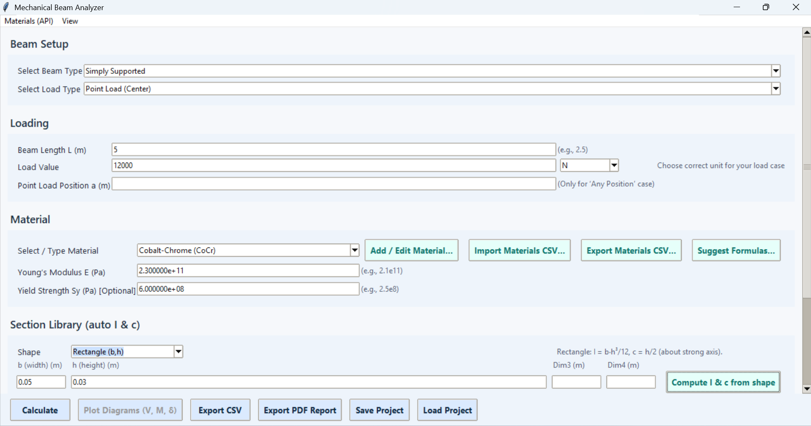
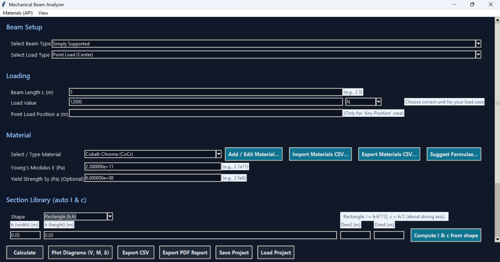
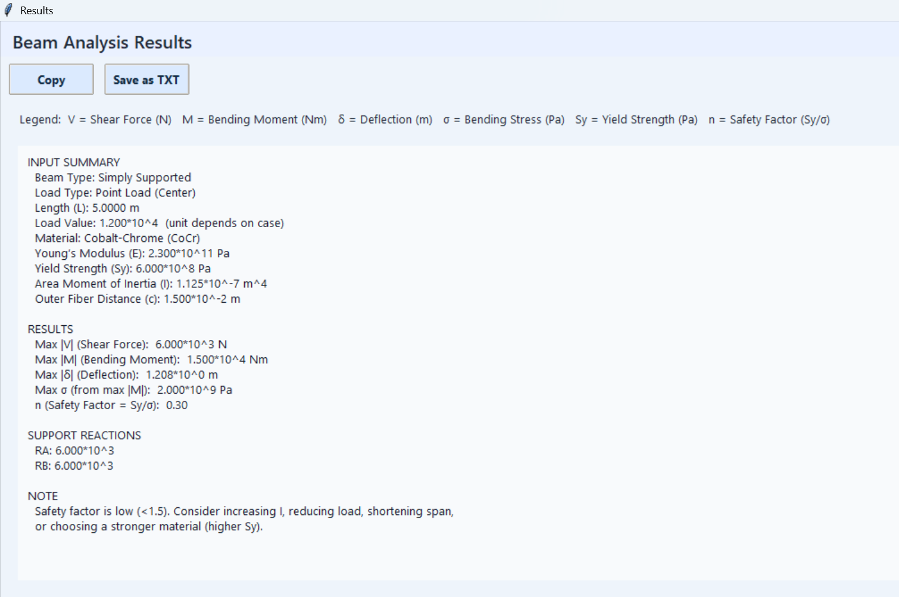
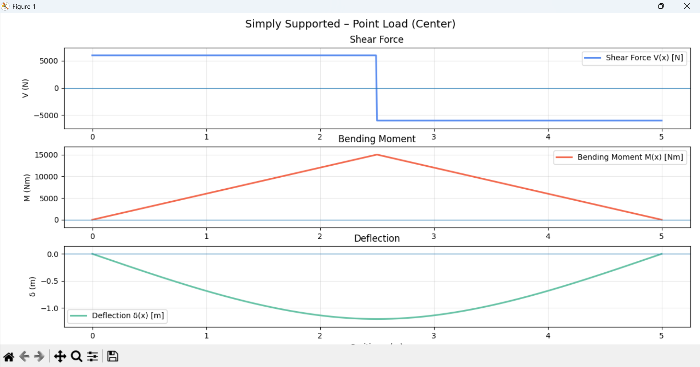

Focus areas
- Engineering analysis and technical problem solving
- Python-based modeling and scientific computation
- Research writing, literature review, and result interpretation
- Professional presentation of technical work and outputs
Mechanical Engineering Graduate • Research • Applied Python
Mechanical Engineering graduate from Chittagong University of Engineering and Technology (CUET) with experience in engineering analysis, technical problem solving, reactor modeling, research writing, and Python-based academic and practical projects.
Mechanical Engineering Graduate
About
My work brings together mechanical engineering, research, and computation. I value structured technical thinking, clear problem solving, and professional presentation of engineering results.
Education
Chittagong University of Engineering and Technology (CUET), Chattogram
CGPA: 3.32 / 4.00
Chittagong College, Chattogram Board
GPA: 5.00 / 5.00
Core Competencies & Skills
SFD, BMD, bending stress, safety factor evaluation, and interpretation of engineering results.
Strong academic understanding of thermal systems, transport processes, and flow behavior.
Project-based experience with plug flow reactor modeling, membrane reactor comparison, and sensitivity analysis.
Comfortable with NumPy, Pandas, plotting, and engineering-oriented computation and automation.
Academic background in MLP, KRR, feature engineering, and explainable model workflows.
SolidWorks, MATLAB, Excel, Power BI, Streamlit, and technical communication for research presentation.
Publications
Research Square • October 2025 • Submitted to Journal of Materials Science (Springer Nature)
DOI: 10.21203/rs.3.rs-7915830/v1Research Square • August 2025
DOI: 10.21203/rs.3.rs-7437155/v1SSRN • September 2025
DOI: 10.2139/ssrn.5500218This section is ready for future updates.
2025 IEEE 7th International Conference on Sustainable Technologies for Industry 5.0 (STI), Bangladesh • December 2025
DOI: 10.1109/STI69347.2025.11367501This section is ready for future updates.
Undergraduate Thesis
Comparative Analysis of Plug Flow Reactor (PFR) and Membrane Plug Flow Reactor for Hydrogen Production from Glycerol using Python.
This final-year project focused on the comparative analysis of a conventional plug flow reactor and a membrane plug flow reactor for hydrogen production from glycerol using Python-based simulation and engineering interpretation.
Test Scores
Projects

A Python-based engineering tool that allows users to analyze beam cases through an interactive interface. The project presents input setup, engineering results, and plotted shear force, bending moment, and deflection diagrams in a practical format.



Plain PFR vs membrane PFR analysis for hydrogen production from glycerol using Python.
A final-year research project focused on reactor comparison, hydrogen production analysis, numerical modeling, and technical interpretation. The project highlights research-driven problem solving with engineering computation.
Repository space for engineering tools, academic work, and future software projects.
My GitHub profile is the main place where I will continue adding engineering tools, research-based mini applications, and future technical projects as my portfolio grows.
Contact
I am open to academic, research, and engineering opportunities.